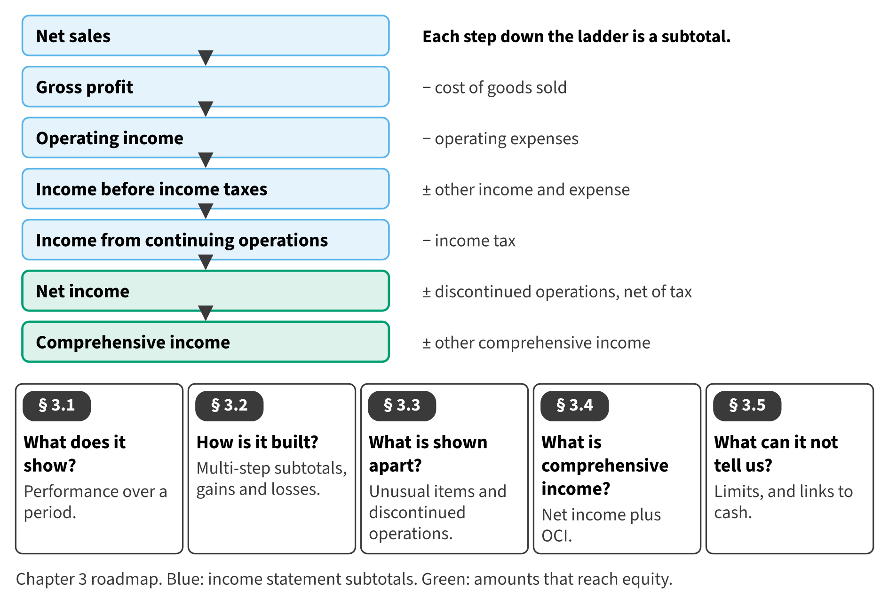

Part I · Foundations and the four financial statements · Chapter 3
The Income Statement and Comprehensive Income
قائمة الدخل والدخل الشامل
Chapter 2 showed Orontes at one moment: December 31. The income statement tells the story of the year that led to that moment. It shows how much the company earned, what it cost to earn it, and what was left for the owners.

Start here
Then
What this chapter is tested on
| LOS | Official statement (ICMA, 2024) | In plain words | Depth here |
|---|---|---|---|
| A.1.b | demonstrate an understanding of the purposes and uses of each statement | Explain the purpose of the income statement and how users apply it. | Full treatment (income statement) |
| A.1.c | identify the major components and classifications of each statement | Identify the components of a multi-step income statement and compare it with the single-step form. | Full treatment (income statement) |
| A.2.aa | define gains and losses, and indicate the proper financial statement presentation for gains and losses | Define gains and losses and show where they are presented. | Introduced (full in Chapter 15) |
| A.2.ee | identify the correct treatment of discontinued operations | Identify a discontinued operation and present its results net of tax. | Introduced (full in Chapter 15) |
| A.2.dd | define and calculate comprehensive income | Define and calculate comprehensive income. | Introduced (full in Chapter 15) |
| A.1.d | identify the limitations of each financial statement | Identify the limitations of the income statement. | Full treatment (income statement) |
The official statements are quoted from the ICMA Learning Outcome Statements (effective September 1, 2024). The plain-words column restates them in simpler English. The exam may test any outcome up to Level C.
What you already know
IFRS calls it the statement of profit or loss, and many IFRS companies show expenses by nature: materials, staff costs, depreciation. U.S. companies almost always show expenses by function: cost of goods sold, selling, and administrative. The totals are the same; the grouping is different.
The 9 key terms
Every scene has Check Answers and Try Again. Try Again reshuffles rather than revealing. When you are wrong, the first thing you read is the reason for the option you chose, taken from the book's own explanations. Progress is saved in this browser.